IAAC · MaCAD
Configurable Topologies
Graph machine learning for architectural form classification.
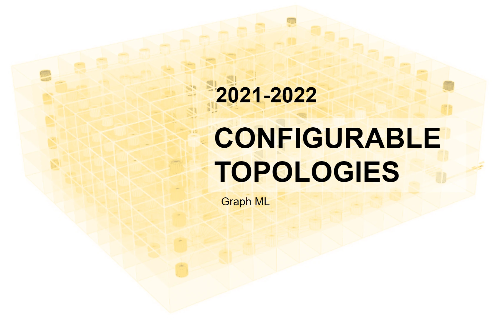
Configurable Topologies is a master’s thesis that asks how architects can compare early building proposals through their spatial relationships. The research treats a building as a graph: spaces become nodes, and adjacency, circulation and enclosure become typed links.
Instead of classifying a plan or render from pixels, the workflow preserves the configuration of a three-dimensional model. It builds a synthetic architectural dataset, encodes each model as a semantic graph, and trains a Graph Convolutional Network to recognise its typology.
Research question
Can a supervised graph-learning workflow identify architectural typology from the topology of a three-dimensional building prototype? The thesis tests this question with slab housing, high-rise towers and perimeter blocks, controlled as parametric families rather than as a claim about every building of each type.
01 — Architectural precedents
Three familiar building types become controlled topological families.
The research begins with residential precedents from different cities and reduces them to three spatial organisations. A slab block centres circulation between two sides of units. A high-rise tower wraps units around a core. A perimeter block organises rooms and circulation around a courtyard.
These are not visual categories. The important distinction lies in how programme, circulation and public or private space connect.
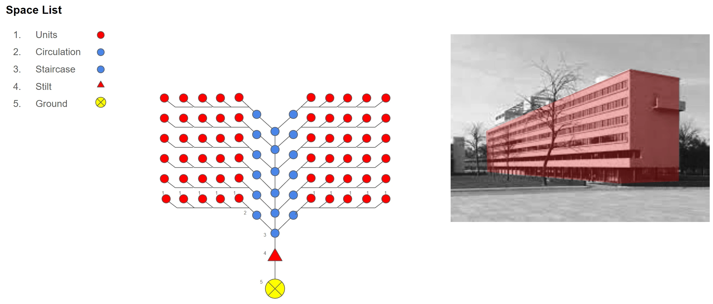
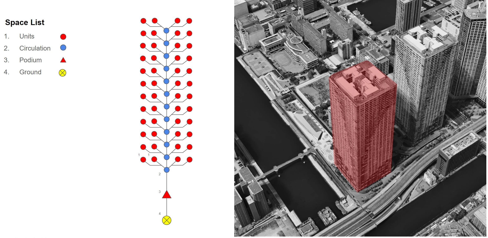
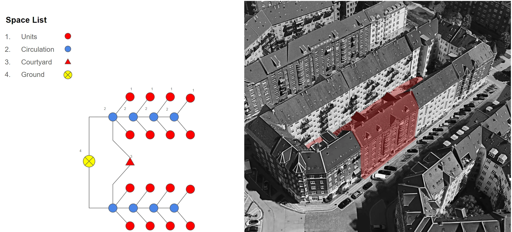
02 — Buildings as graphs
Translate spatial configuration into data a model can read.
Each building is abstracted into a semantic graph. Nodes identify spatial roles such as units, circulation, podium, core, ground or courtyard. Links record the relationship between two spaces, including adjacency, floor continuity, walls and external circulation.
This makes the design model computationally legible without erasing its three-dimensional organisation.
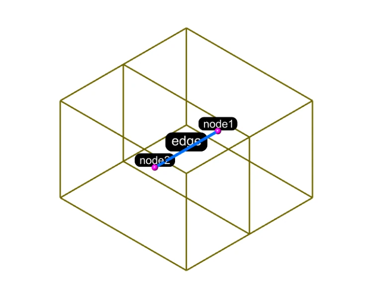
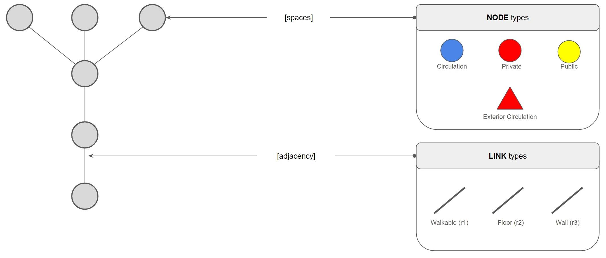
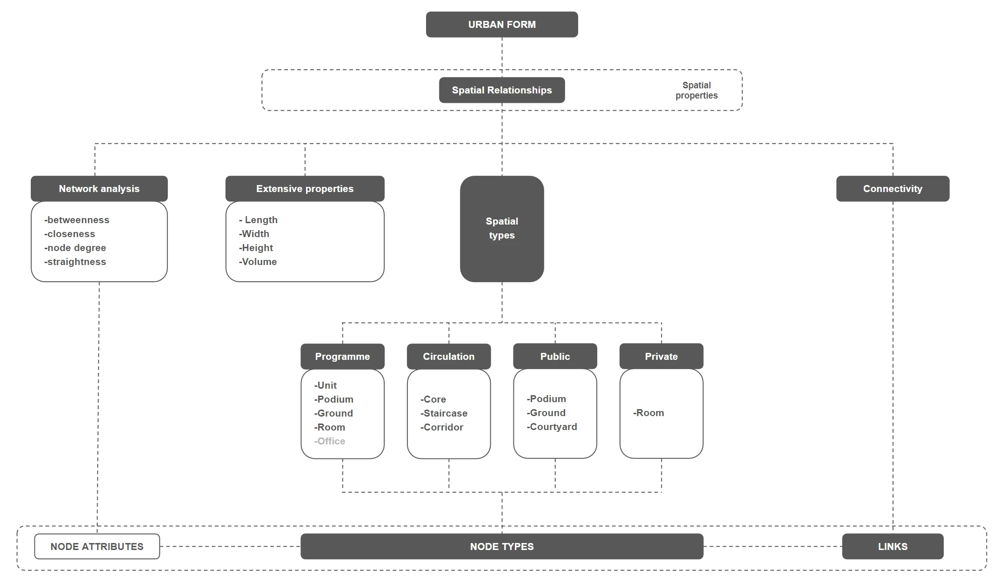
03 — Parametric dataset
Generate many valid variations before asking the model to generalise.
A Grasshopper definition varies the numerical properties of each typology, including floor count, core height, corridor length and unit arrangement. Topologic converts these conceptual cuboid-cell buildings into dual graphs, then exports node, edge and graph information as structured tables.
Design-space exploration supplies controlled diversity. It also keeps the rules that created each sample visible and editable.
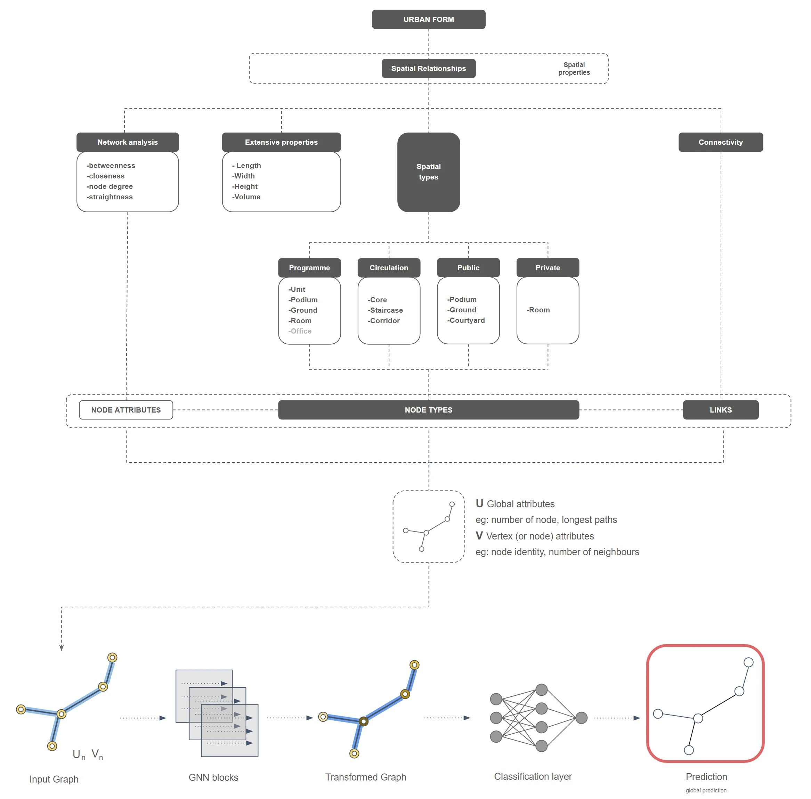
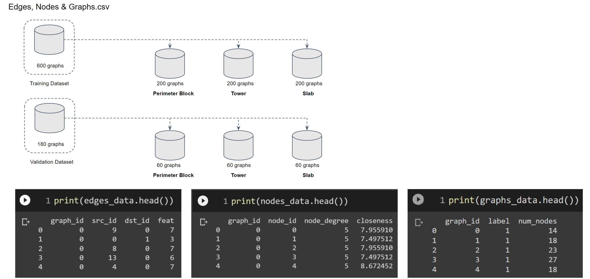
04 — Graph machine learning
Classify relationships, rather than an image of a building.
The graphs are imported into the Deep Graph Library for supervised learning. A Graph Convolutional Network combines node features, link structure and global graph information, then predicts whether a new sample belongs to the slab, tower or perimeter-block family.
The study compares training configurations including batch size, learning rate, hidden-layer width, convolution type and pooling method. Accuracy and loss are evaluated against a held-out validation dataset.
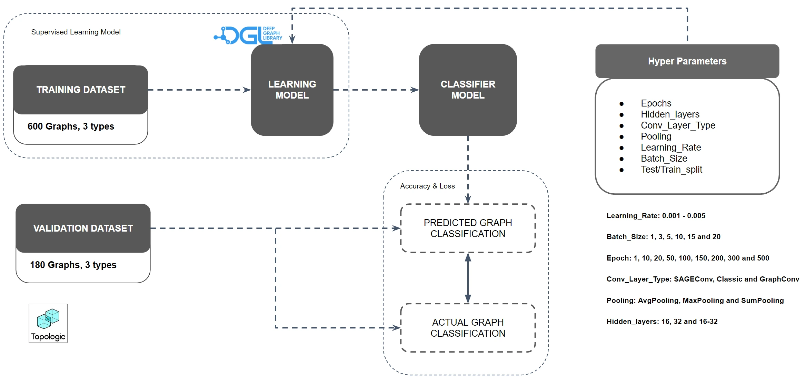
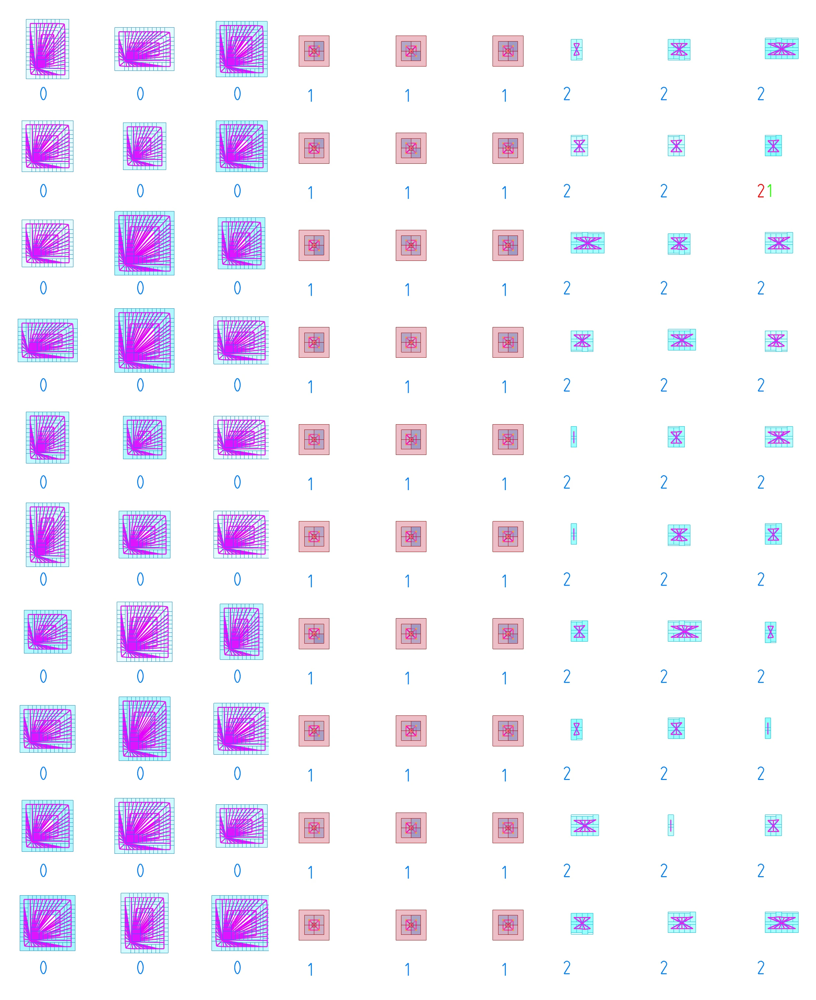
05 — Thesis outcome
A framework for topological comparison at the beginning of design.
The thesis demonstrates a classification pipeline for its synthetic dataset. A separate validation slide reports 89 correct classifications from 90 graphs. The conclusion reports 100% accuracy for a selected training configuration; these figures describe different experiments and do not establish performance on real-world buildings. Its value is the connection of parametric modelling, architectural topology and graph learning into one interpretable workflow.
A future version could expand the dataset beyond controlled prototypes and link graph classification to richer BIM or precedent data. The thesis establishes the data structure and learning logic needed for that next stage.
- Rhino + Grasshopper
- Parametric prototypes
Generate controlled building variations and expose the parameters that shape each typology.
- Topologic
- Semantic topology
Convert non-manifold spatial relationships into dual graphs with architectural meaning.
- Python + DGL
- Graph classification
Train and evaluate a supervised Graph Convolutional Network on node, edge and graph data.
Credits & source
Configurable Topologies is an individual thesis developed at IAAC, Institute for Advanced Architecture of Catalonia, in the Master in Advanced Computation for Architecture and Design.
Author: Naitik Sharma. Thesis guide: Oana Taut. Technical support: Dr. Wassim Jabi, Cardiff University and Topologic.app.
Research diagrams and results come from the 2021–2022 thesis submission. Architectural precedent photographs and external technical diagrams retain their original authorship.
View the IAAC project documentation